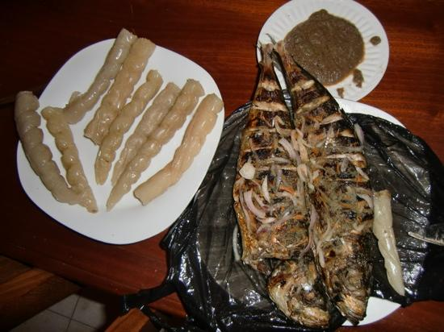

Overview
Description
Travel Explorer
Thing to know about Cameroon
Select a region:
Center
Adamaoua
East
North
Littoral
NorthWest
SouthWest
South
West
Far North
#
Demography
Population
28,647,293
Age Structure
0-14 years old(42.34%)
Regions
10
Special Local Dishes
NDOLE
Poulet Dj
Eru
KOKI
ACHU
Nkuir
 fish
Okok